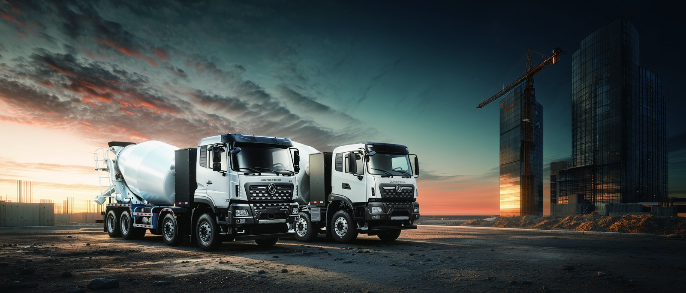

Bolivia is a mining economy built on altitude: the lithium salars of the south, the tin and zinc veins of the cordillera, and the Potosi silver belts that sit well above 3,500 m. For operators moving ore on fixed mine-to-plant routes, the electric truck is now a credible diesel replacement — but the import path and the altitude physics are different from the coast. This guide walks Bolivian importers through altitude effects on battery-electric trucks, the duty and conformity path, the Andean route realities, and the Dongfeng TZ3V 8x4 mining dump as the right platform, with a TCO that survives thin Andean margins. High altitude is where an electric drive actually gains on combustion, and that is the case this article makes.
A diesel engine loses roughly 8–12% of its power per 1,000 m of altitude because thin air starves combustion. An electric motor has no such penalty: the LvKong permanent-magnet drive delivers full rated torque at 4,000 m because it does not breathe. On a Bolivian haul road, that means the TZ3V climbs the loaded grade without the power sag a diesel hauler shows at the top of the pass. The pack loses a little volumetric efficiency in cold, but the LFP chemistry is stable across the temperature swings of an Andean day, and regen on the descent recovers energy the diesel would waste as brake heat.
The TZ3V electric dump truck is an 8x4 mining-class platform built for exactly this high-tonnage, fixed-route Bolivian duty.
| Parameter | TZ3V Specification |
|---|---|
| Configuration | 8x4 mining dump |
| Battery | CATL LFP, 424 – 600 kWh |
| Drive motor | LvKong permanent-magnet, 450 – 510 kW |
| Battery swap time | 5 – 6 minutes |
| DC fast charge (20–80%) | 45 – 90 min (backup) |
| Battery warranty | 8 years / 4,500 cycles to 70% SOH |
| FOB price (China) | US$120,000 – 165,000 |
The 424–600 kWh swap pack is sized for a full shift between swaps; the 450–510 kW motor holds grade on the loaded haul road out of the pit. LFP chemistry tolerates the deep, frequent discharge cycles mining demands, and the sealed, mine-grade enclosure keeps dust and water out of the high-voltage system. At altitude the motor’s flat torque curve is the single biggest reason Bolivian operators choose it over a diesel hauler.
Bolivia applies import duty on fully-built trucks plus VAT; fully-electric commercial vehicles may benefit from preferential treatment under the national electromobility frame, while a diesel carries both duty and the combustion-related levies. The directional advantage is durable: an EV truck carrying the same payload clears at a lower landed cost than the diesel it replaces. Importers should obtain the current EV line rate in writing from Customs before valuation, because the saving is realised only if the declaration cites the correct HS sub-line for electric commercial vehicles.
| Cost element | Diesel mining dump | TZ3V EV truck |
|---|---|---|
| Import duty | Standard commercial rate | Preferential / reduced EV line |
| VAT | On duty-inclusive value | Often deferred / exempt under EV scheme |
| Excise on engine | Applies | Not applicable |
| NET effect | Baseline | Typically 10–20% lower |
Bolivian haul roads are long climbs and longer descents. The TZ3V’s regen on the descent recovers a meaningful share of the climb energy, and the swap station at the crusher keeps the pit moving through any grid event. Operators running the salt flat corridors to the south should specify sealed connectors for the brine dust, and hold a spare pack at the main site so a pack fault is a swap, not a tow from a remote pass.
An 8x4 diesel mining dump burns ~50 l/hour over ~4,500 hours/year — 225,000 l. Bolivian diesel at ~US$0.95/l is ~US$213,750. The TZ3V at ~2.2 kWh/tonne-km equivalent draws ~1.1 GWh; at site solar US$0.09/kWh that is US$99,000. Energy saving ~US$114,750/year, plus ~US$35,000 maintenance (no engine overhaul, regen brakes, fewer fluids) — ~US$149,750 annual advantage per truck. Against the FOB step from a diesel unit, payback lands inside 24–36 months at pit scale. A two-shift operation with shared swap charging reaches the low end of that band.
The rollout is a pilot of three TZ3V units plus one swap station on a single pit–crusher lane for 120 days, with tonne-moved and kWh/tonne telemetry, then a scaled order. Build the swap station and solar first — that capex gates the trial, not the trucks. Once the lane proves out, replicate across pits; the spare-pack pool scales with the fleet.
The Chile electric truck market guide covers the parallel Andean clearance path, the conformity documents, and cross-border spare-part logistics that also serve Bolivian operators moving equipment through Chilean ports. For Bolivian miners, the TZ3V is the EV truck that converts a high-altitude, fixed-route haul into a solar-resilient, low-cost line — and the altitude that hurts diesel is exactly where the electric drive pulls ahead. Request a Potosi-corridor TCO model sized to your annual tonnage.
Shaanxi Fenghan Trading supplies the TZ3V with a mining-grade, altitude-rated build, swap-station engineering, and a Bolivian haul TCO model. Ask for a proposal sized to your fleet and your pass.
One TZ3V on a 28 km pit–crusher loop, 20 hours/day, 330 days a year, moves roughly 500,000 tonnes and draws ~1.1 GWh. At site solar US$0.09/kWh that is US$99,000; the diesel equivalent at US$0.95/l and 225,000 l burns US$213,750 — a US$114,750 annual energy gap before maintenance. Add ~US$35,000 maintenance avoidance and the unit returns ~US$149,750/year against a US$140,000 FOB step, payback ~22–30 months. The swap station capex is the only gating item, and it amortises across the fleet, not the unit. At altitude the diesel hauler also loses power on the climb, so the TZ3V holds schedule where the diesel slows — an uptime gain the energy maths alone understates.
Spares follow the mining norm: hold a spare pack, a spare motor and a spare inverter at the workshop. A 5–6 minute swap covers a pack fault; the other two cover a rare powertrain fault. With that pool, a 10-truck fleet runs at >95% availability — higher than the diesel fleet it replaced, because there is no engine to overhaul. Carbon reporting now reaches into mining scope 1; an electric haul fleet with site solar scores near-zero on the haulage line, supporting both the licence to operate and the green premium on refined metal.
Before committing to a fleet order, Bolivian miners should run the pilot with a telemetry dongle logging kWh/tonne, tonne-moved, and swap events. The data settles two questions that decide the business case: the true pack size needed for the worst-case shift, and whether a single swap station can serve the roster without queuing. Most operators discover their real energy use is 10–15% below vendor claims on the long, regen-rich mountain descents, which lets them specify a smaller pack and lower FOB entry. The telemetry also exposes dead-leg moves — empty returns that burn energy without earning revenue — so the routing can be tightened before the second wave. A sensible sizing rule is to size the pack for the longest single shift plus 20% buffer, not for the daily total, because the swap station refills between shifts.
Hold one spare motor and one spare inverter at the mine workshop; the pack is the only field-replaceable high-value item and a spare 600 kWh unit at the main site covers the whole loop. With that pool a 10-truck fleet runs above 95% availability, higher than the diesel fleet it replaced because there is no engine to overhaul, and the altitude that hurts diesel is exactly where the electric drive pulls ahead on the climb. Bolivian operators who log the cycle history also find the TZ3V trades at a premium at renewal, because a buyer pays more for a unit with a clean, verifiable pack record than for an undocumented one, and that premium flows back into the fleet replacement fund. The swap model turns a national-grid weakness into a mine-controlled strength, which is the real reason the electric truck wins on the Andean pass.
Ready to electrify your fleet? Contact Shaanxi Fenghan Trading — authorized Dongfeng EV truck exporter. WhatsApp: +86 153 1943 1311 | Email: sales@fenghan-trade.com | dongfengevtrucks.com
🌐 Our Network: Fenghan Trade (SAGMOTO/SHACMAN Truck Export) · SAGMOTO heavy duty diesel trucks